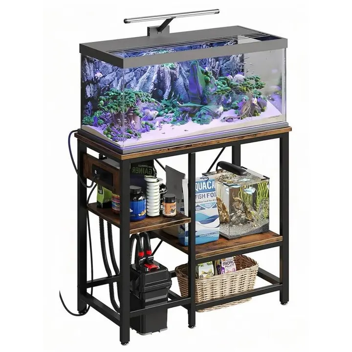

من مجموعة أكوا هافنAQUA HAVEN / THE COLLECTION
طاولة أحواض أسماك مع منافذ طاقة وأرفف قابلة للتعديل
طاولة متعددة الاستخدامات للأحواض بمقاس 78 × 35 × 77 سم، بهيكل فولاذ كربوني وألواح خشبية، مع أرفف قابلة للتعديل ودعامة خلفية لتعزيز الثبات.
٢٧٩ ر.س
متاح ضمن اللقطة المرجعية
هذه معاينة للتصميم. الأسعار والخيارات والتوفر مرجعية وغير متزامنة؛ لا يمكن الطلب أو الدفع من هذه الصفحة.
A CLOSER LOOK
نظرة أقرب.
نبذة عن المنتج
طاولة متعددة الاستخدامات بتصميم عملي وثابت، مناسبة لوضع أحواض الأسماك وتنظيم مستلزماتها، كما يمكن استخدامها كوحدة تخزين في المنزل أو المطبخ. تجمع بين سطح وأرفف خشبية وهيكل من الفولاذ الكربوني لتوفير ثبات جيد واستخدام عملي في المساحات المختلفة.
المواصفات الأساسية
- الأبعاد: 78 × 35 × 77 سم
- الوزن: 8 كجم
- الخامات: ألواح خشبية مع هيكل من الفولاذ الكربوني
- اللون: بني
- رقم الموديل: CG0613
المميزات
- تصميم متعدد المستويات للاستفادة من المساحة وتنظيم الأدوات والمستلزمات.
- هيكل ثابت ومتين مناسب للاستخدام كطاولة لحوض الأسماك أو كوحدة تخزين متعددة الاستخدامات.
- دعامة خلفية بتصميم X لتعزيز ثبات الهيكل.
- إمكانية تعديل ارتفاع الألواح الوسطية بما يناسب طريقة الاستخدام.
- أقدام قابلة للضبط للمساعدة على موازنة الطاولة على الأرضيات المختلفة.
- تصميم مفتوح يسهّل الوصول إلى الأدوات والمستلزمات المخزنة.
- خامات مقاومة للرطوبة والصدأ وسهلة التنظيف.
الاستخدام
مناسبة لوضع حوض الأسماك ومستلزماته، ويمكن استخدامها كذلك لتنظيم الأدوات المنزلية أو مستلزمات المطبخ. قبل وضع الحوض، تأكد من أن أبعاده وقاعدته مناسبة بالكامل لسطح الطاولة وأنها موضوعة على أرضية مستوية وثابتة.